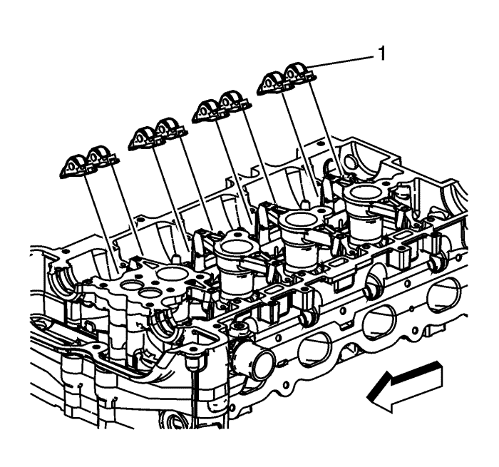
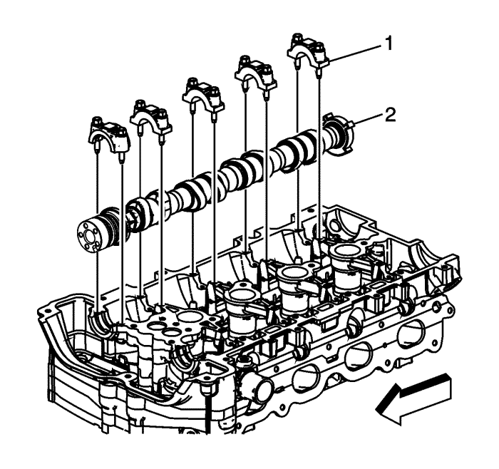
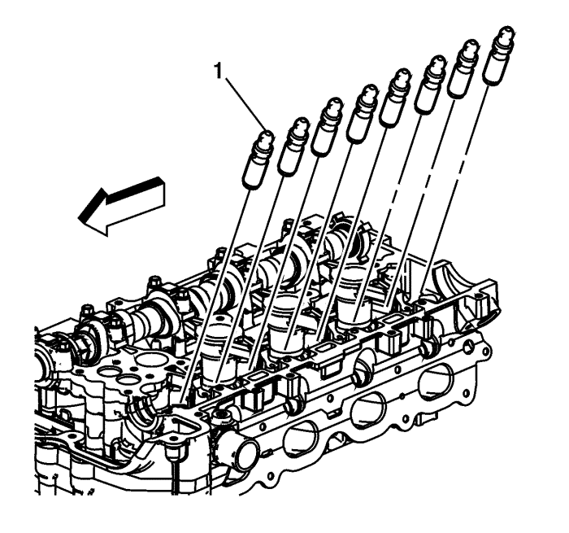
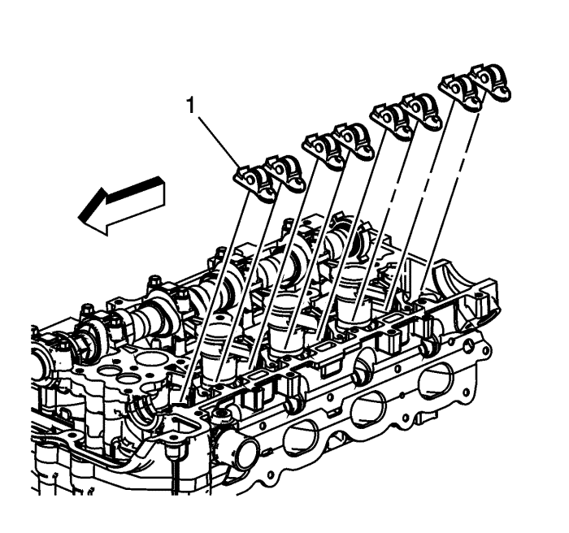
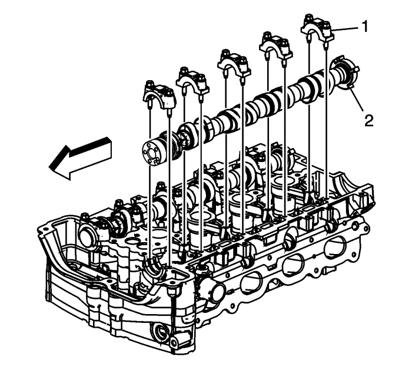

Montaje del árbol de levas de admisión y escape, sombrerete del cojinete, y regulador de juego — LE5
Montaje de componentes y del árbol de levas de escape

- Monte los compensadores de juego hidráulicos (1) en sus orificios de la culata y lubríquelos. Consultar Adhesivos, líquidos, lubricantes y selladores .
- Lubrique las puntas de las válvulas (1). Consultar Adhesivos, líquidos, lubricantes y selladores .

Nota: Los seguidores de rodillo usados deben restablecerse a su posición original en el árbol de levas. Si se va a sustituir el árbol de levas, también deben reemplazarse los seguidores de rodillo accionados por el árbol de levas.
- Coloque los seguidores de rodillo (1) en la punta del vástago de válvula y en el compensador de juego y lubríquelos. Consultar Adhesivos, líquidos, lubricantes y selladores .
Nota: El motor está en la carrera de escape de punto muerto superior cronometrada.
- Cuando monte los árboles de levas, asegúrese de que la muesca del árbol de levas de escape está en la posición de las 7 en el reloj (1). El pistón número 1 debería estar en el punto muerto superior, la llave del cigüeñal a las 12 horas.

- Ponga el árbol de levas de escape (2) encima de los seguidores de rodillo en los muñones de cojinete del árbol de levas y lubríquelos. Consultar Adhesivos, líquidos, lubricantes y selladores .
- Monte los sombreretes de cojinete del árbol de levas (1) y apriete con la mano sus tornillos.
Precaución: Consulte Precaución con las fijaciones en la sección Prólogo
- Apriete los tornillos de los sombreretes del árbol de levas en incrementos de 3 vueltas hasta que queden fijos y lubríquelos. Apriete las caperuzas del árbol de levas hasta 10 N·m (89 lib. pulg.).
Montaje de componentes y del árbol de levas de admisión

- Monte los compensadores de juego hidráulico (1) en sus orificios de la culata.
- Lubrique los compensadores de juego hidráulicos. Consultar Adhesivos, líquidos, lubricantes y selladores .
- Lubrique las puntas de las válvulas (1). Consultar Adhesivos, líquidos, lubricantes y selladores .

Nota: Los seguidores de rodillo usados deben restablecerse a su posición original en el árbol de levas. Si se va a sustituir el árbol de levas, también deben reemplazarse los seguidores de rodillo accionados por el árbol de levas.
- Coloque los seguidores de rodillo (1) en la punta del vástago de válvula y en el compensador de juego. Lubrique los seguidores de rodillo. Consultar Adhesivos, líquidos, lubricantes y selladores .
Nota: El motor está en la carrera de escape de punto muerto superior cronometrada.
- Cuando monte los árboles de levas, asegúrese de que la muesca del árbol de levas de admisión está en la posición de las 5 en el reloj (1). El pistón número 1 debería estar en el punto muerto superior, la llave del cigüeñal a las 12 horas.

- Ponga el árbol de levas de admisión (2) encima de los seguidores de rodillo en los muñones de cojinete del árbol de levas y lubríquelos. Consultar Adhesivos, líquidos, lubricantes y selladores .
- Monte los sombreretes de cojinete del árbol de levas (1) y apriete con la mano sus tornillos.
- Apriete los tornillos de los sombreretes de cojinete del árbol de levas en incrementos de 3 vueltas hasta que queden fijos. Apriete las caperuzas del árbol de levas hasta 10 N·m (89 lib. pulg.).
| © Copyright Chevrolet Europe. All rights reserved |